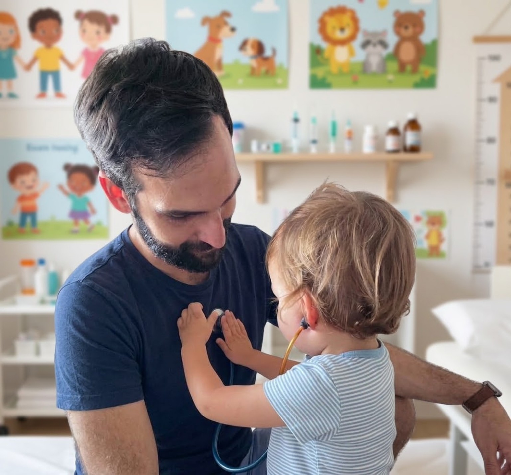

Dolor abdominal crónico
Cuando se repite y/o interfiere con el día a día.
Digestivo infantil en Málaga
Pediatra con dedicación a la Gastroenterología Pediátrica y la endoscopia digestiva infantil.
Pedir citaCuando se repite y/o interfiere con el día a día.
Valoración y seguimiento de las alteraciones relacionadas con las deposiciones.
Abordaje de problemas de la parte superior del aparato digestivo.
Valoración de síntomas digestivos relacionados con la alimentación.
Soy pediatra y desde el final de mi formación en el Hospital Universitario Virgen del Rocío (Sevilla) oriento gran parte de mi actividad hacia la Gastroenterología Pediátrica y la endoscopia digestiva infantil, compaginando desde 2020 mi labor en Atención Primaria con la atención en el ámbito privado a niños y niñas con problemas digestivos y acompañando a sus familias en la valoración y seguimiento de cada caso.
Antes incluso de estudiar Medicina observé que, de forma didáctica, el cuerpo humano se dividía en aparatos y sistemas (aparato digestivo, aparato respiratorio, sistema nervioso…), dando lugar posteriormente a las distintas especialidades médicas (gastroenterología, neumología, neurología…).
Aunque es imposible abarcar todo el conocimiento de áreas tan diferentes, siempre he echado en falta la integración de todas estas “piezas” en la persona que tenemos delante en consulta. Esta forma de entender la medicina fue uno de los motivos por los que elegí Pediatría, una especialidad que permite valorar al niño o la niña en su conjunto. Con el tiempo, mi actividad se ha orientado en gran medida hacia la Gastroenterología Pediátrica, pero sin perder esa visión global: especializarse permite profundizar en un área sin olvidar nunca a la persona de la que forma parte.
Entiendo además la atención pediátrica como un acompañamiento en el que la familia tiene un papel fundamental y que requiere escuchar, explicar y trabajar conjuntamente para cuidar la salud del niño o la niña. Esto es lo que trato siempre de transmitir en consulta.

Próximamente.
Puedes solicitar una consulta programada en alguno de estos centros.
Málaga
Málaga
Benalmádena